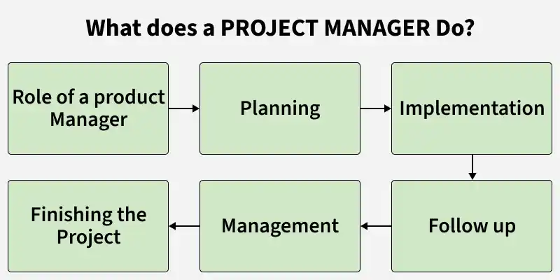

3.3 Role & Responsibilities of Software Project Manager
The Software Project Manager (SPM) is the professional responsible for planning, organising, executing, and closing a software project from initiation to delivery. The manager acts as the central coordinator who connects developers, testers, designers, data scientists, customers, and senior management. They have authority to run the project within agreed constraints of scope, schedule, budget, and quality.
The role is demanding because the manager is accountable for the success of the entire project — not just their own technical work. Tight deadlines, limited resources, changing requirements, and unexpected risks create constant pressure. Effective managers combine technical awareness with strong leadership, communication, and problem-solving skills.

Primary responsibilities
A software project manager's day-to-day work covers the following areas:
- Project planning: The manager defines goals and creates the project plan covering scope, schedule, budget, and resource allocation. This blueprint guides the entire team.
- Team leadership: The manager assembles and leads the team, assigns tasks, fosters collaboration, and resolves interpersonal conflicts before they affect delivery.
- Stakeholder communication: The manager communicates clearly with customers, executives, and team members through status reports, meetings, and formal reviews.
- Progress tracking: The manager monitors day-to-day execution, compares actual progress against the plan, and identifies slippage early enough to take corrective action.
- Risk management: The manager identifies, analyses, and mitigates risks such as schedule delays, cost overruns, and quality defects (see §3.8).
- Change control: When requirements or scope change, the manager evaluates the impact on schedule and cost and obtains approval before the team proceeds.
- Quality assurance: The manager ensures that reviews, testing, and standards compliance happen at the right milestones so defects are caught early.
- Delivery and closure: The manager ensures the product is delivered on time, within budget, and to the required quality, then formally closes the project with stakeholder sign-off.
Essential skills of a project manager
Examiners often ask which skills a project manager needs. The most important are:
- Planning skills: Creating realistic schedules and work breakdown structures.
- Leadership skills: Motivating the team and setting direction.
- Communication skills: Explaining technical progress to non-technical stakeholders.
- Negotiation skills: Resolving conflicts between scope, time, and cost.
- Budget management: Tracking expenditure against the approved budget.
- Time management: Ensuring milestones are met and priorities are clear.
- Reporting skills: Preparing accurate progress reports and project documentation.
Consequences of poor project management
When a software project manager lacks the necessary expertise, several problems arise: resources are wasted, schedules become unreliable, data protection may be neglected, and conflicts develop between developers and stakeholders. Over-complicating the management process itself can confuse teams and delay completion. Cross-functional teams that are not fully dedicated to the project add further complexity because members juggle project work with their regular duties.
Q: Describe the role and responsibilities of a Software Project Manager. What skills are essential?
Model answer points:
- Define the SPM as central coordinator with authority over scope, schedule, budget, and quality.
- List responsibilities: planning, team leadership, stakeholder communication, progress tracking, risk management, change control, quality assurance, delivery.
- Name essential skills: planning, leadership, communication, negotiation, budget and time management, reporting.
- Mention consequences of poor management: resource loss, schedule slippage, conflicts, project failure.
- Contrast with the technical role of developers — the manager coordinates rather than writes all the code.